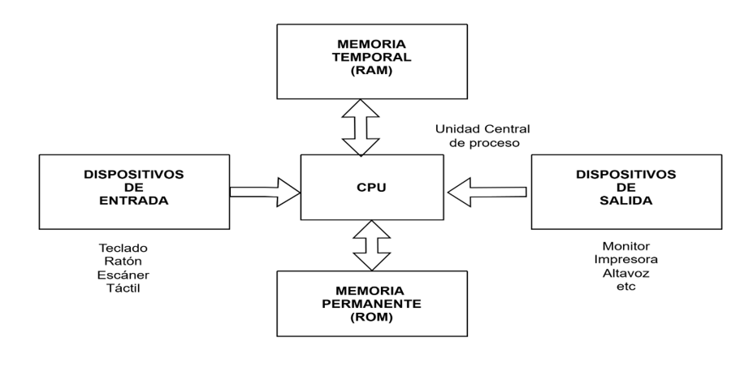

📌 Estructuras de datos estáticas
Implementa estructuras de datos estáticas en la memoria de una computadora a partir del uso de arreglos, su representación y sus posibilidades, así como un lenguaje de programación.
📚 Los siguientes temas se tratan en esta unidad:
Un arreglo unidimensional es un tipo de estructuras de datos que consta de un número fijo de elementos de un mismo tipo.
También se considera como una colección finita, es decir, se debe de determinar cuál será el número máximo de elementos que formarán parte del arreglo unidimensional (tamaño del arreglo), donde todos los elementos son del mismo tipo.
Los arreglos unidimensionales se consideran estructuras de datos estáticas, ya que al momento de declarar se les asigna un tamaño, el cual no puede ser modificado durante la ejecución del programa.
Utilizando cualquier lenguaje de programación un vector se declara de la siguiente forma:
int Arreglo_Unidimensional [10]; // Tipo de dato Nombre_Arreglo Tamaño // puede ser char, int o float

📌 Representación de un arreglo unidimensional en memoria
Una de las operaciones que se pueden realizar sobre un arreglo unidimensional es la asignación. Existen tres formas para asignar valores a un arreglo unidimensional o a un arreglo bidimensional:
1. Al momento de declarar el arreglo unidimensional o bidimensional se le asignan los valores:
int Arreglo_Unidimensional[10] = {2,4,6,8,10,12,14,16,18,20};
2. Cuando se les piden los valores a los usuarios:
for (int i=0; i < 10; i++) { cout << "Ingrese el valor del Arreglo_Unidimensional[" << i << "]: "; cin >> Arreglo_Unidimensional[i]; }
3. Asignación automática:
int Arreglo_Unidimensional[10]; int Acumulador = 2; for (int i=0; i < 10; i++) { Arreglo_Unidimensional[i] = Acumulador; Acumulador = Acumulador + 2; }
✏️ Realizar el siguiente ejercicio:
🎯 Propósito: Utilizar un lenguaje de programación para declarar el arreglo unidimensional definiéndolo con el tipo de dato string (cadena de caracteres) y en el que se puedan ingresar 6 nombres de jugadores.
La intención de esta actividad es que el estudiante comprenda las operaciones que se realizan sobre un arreglo unidimensional, para este caso es el de asignar valores al arreglo; así como recorrerlo para acceder y mostrar cada uno de sus elementos; por último, realizar una búsqueda.
Subir esta evidencia a classroom en la hora y fecha indicada
⭐ El valor de la actividad es de 10 puntos.
🎯 Propósito: Utilizar un lenguaje de programación para declarar el arreglo unidimensional definiéndolo con el tipo de dato entero (int) y en el que se puedan ingresar 10 números pares.
La intención de esta actividad es que el estudiante comprenda las operaciones que se realizan sobre un arreglo unidimensional, para este caso es el de asignar valores al arreglo, así como recorrerlo para acceder y mostrar cada uno de sus elementos.
Subir esta evidencia a classroom en la hora y fecha indicada
⭐ El valor de la actividad es de 10 puntos.
Un arreglo bidimensional es un vector de vectores.
Es un conjunto de elementos, todos del mismo tipo, en los que el orden de los componentes es significativo y en el que se necesitan dos subíndices [i][j] para definir cualquier elemento. Donde el primer índice representa las filas y el segundo las columnas. También se le conoce como tabla o matriz.
La diferencia que existe entre un arreglo unidimensional a un arreglo bidimensional, es que el primero solo necesita un subíndice [i] y el arreglo bidimensional requiere de dos subíndices [i][j].
int Arreglo_Bidimensional [4] [3]; // Tipo de dato Nombre_Arreglo Filas Columnas // puede ser char, int, float, etc
| Columna 0 | Columna 1 | Columna 2 | Columna 3 | |
|---|---|---|---|---|
| Fila 0 | Matriz[0][0] | Matriz[0][1] | Matriz[0][2] | Matriz[0][3] |
| Fila 1 | Matriz[1][0] | Matriz[1][1] | Matriz[1][2] | Matriz[1][3] |
| Fila 2 | Matriz[2][0] | Matriz[2][1] | Matriz[2][2] | Matriz[2][3] |

📌 Ejemplo de matriz de tamaño 4x3
✏️ Realizar el siguiente ejercicio:
Existen varios tipos de arreglos bidimensionales, por ejemplo, el arreglo bidimensional identidad o matriz identidad.
La matriz identidad es una matriz cuadrada (el número de filas es igual al número de columnas), donde todos sus elementos son ceros (0) menos los elementos de la diagonal principal que son unos (1). Por ejemplo, la siguiente matriz identidad de (4x4) 16 elementos:

📌 Matriz Identidad de 4x4
🎯 Propósito: Utilizar un lenguaje de programación para declarar el arreglo bidimensional (matriz identidad) definiéndola con el tipo de dato entero (int) y en el que se puedan asignar 16 elementos a la matriz identidad.
La intención de esta actividad es que el estudiante comprenda las operaciones que se realizan sobre un arreglo bidimensional, para este caso es el de asignar valores al arreglo bidimensional, así como recorrerlo para acceder y mostrar cada uno de sus elementos.
Subir esta evidencia a classroom en la hora y fecha indicada
⭐ El valor de la actividad es de 10 puntos.
Otro tipo de arreglo bidimensional que existe es la matriz traspuesta.
La matriz traspuesta se obtiene al intercambiar de manera ordenada las filas de la matriz por sus columnas.
Para que entiendas vamos a utilizar dos matrices, la primera la vamos a llamar matriz A de tamaño (2x3) y la segunda la vamos a llamar Matriz At de (3x2), como se puede observar y para realizar la traspuesta, el tamaño de las filas de la matriz A que es 2 debe ser igual al tamaño de las columnas de At que es 2, esto es porque las filas de A van a pasar como columnas de At. De manera que cada fila pasa a ser una columna y, asimismo, cada columna pasa a ser una fila.

📌 Matriz A (2x3) y su traspuesta At (3x2)
🎯 Propósito: Utilizar un lenguaje de programación para declarar el arreglo bidimensional Matriz A(2x3) definiéndola con el tipo de dato entero (int) y en el que se puedan asignar 6 elementos de forma automática. También declarar la matriz At (3x2) de 6 elementos de tipo de dato entero (int).
La intención de esta actividad es que el estudiante comprenda las operaciones que se realizan sobre un arreglo bidimensional, para este caso es el de asignar de forma automática los valores a la matriz A dentro de los dos primeros ciclos del For. Después realizar la transpuesta a la matriz At con los siguientes dos segundos ciclos del For, para pasar las filas de la matriz A a las columnas de la matriz At, así como recorrer ambas matrices para acceder y mostrar cada uno de sus elementos.
Subir esta evidencia a classroom en la hora y fecha indicada
⭐ El valor de la actividad es de 10 puntos.
En los dos contenidos anteriores se vio que los arreglos unidimensionales son de una dimensión, los arreglos bidimensionales de dos dimensiones, entonces los arreglos multidimensionales son de más de dos dimensiones, como son los data warehouse. A diferencia de los arreglos unidimensionales y bidimensionales, son una colección finita, homogénea y ordenada de elementos de n dimensiones, por lo que se puede trabajar con grandes volúmenes de información de manera organizada y eficiente.
Para hacer referencia a cada componente de un arreglo multidimensional, se usarán n dimensiones, uno para cada dimensión.

📌 Arreglo multidimensional - Data Warehouse